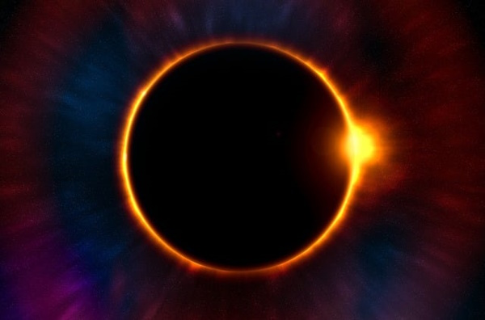
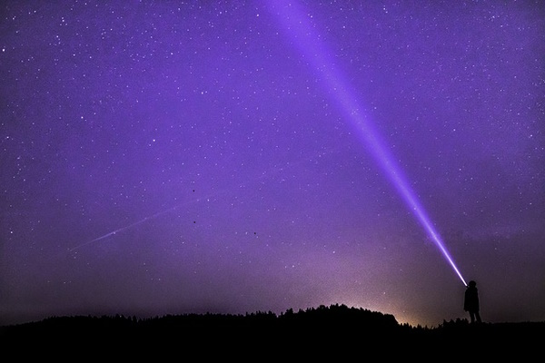
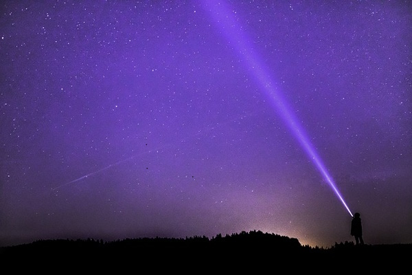
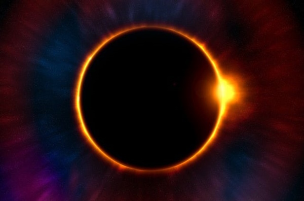
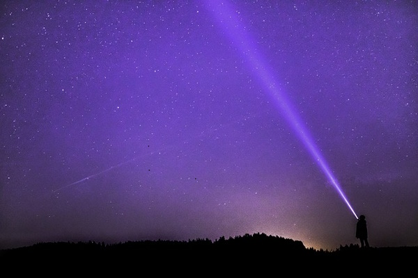

 

El espacio exterior, espacio vacío, espacio sidéreo, espacio sideral o simplemente espacio, se refiere a las regiones relativamente vacías del universo fuera de las atmósferas de los cuerpos celestes. Se usa «espacio exterior» para distinguirlo del espacio aéreo y las zonas terrestres.


El espacio exterior no está completamente vacío de materia (es decir, no es un vacío perfecto) sino que contiene una baja densidad de partículas, predominantemente gas hidrógeno, así como radiación electromagnética. Aunque se supone que el espacio exterior ocupa prácticamente todo el volumen del universo y durante mucho tiempo se consideró prácticamente vacío, o repleto de una sustancia denominada «éter», ahora se sabe que contiene la mayor parte de la materia del universo.
Espacio exterior
Espejel Resendiz Jonathan